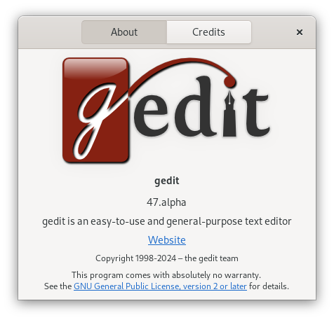

There will be a change of icons and logo for gedit 47.
Some dates:
- September 2018: new icon for gedit and other GNOME apps.
- March 2024: restore to the previous design.
The current icon, restored from a previous design:

The old icon (2018-2024):

The git commit message has all the details for the reasons of the change. Namely, the old icon had several disadvantages:
- The pencil was too big.
- The blue color at the bottom was barely visible, especially at small sizes.
The current design has actually several icons that are tailored for different sizes. All the icons have been restored.
The logo has also been restored and is present in the About dialog window:

To avoid any confusion, only the icons and logo that represent the application (gedit) are affected. All the other icons used within gedit remain the same (for example to represent a directory or a printer) and rely on the icon theme used (it's a desktop-wide setting).
I hope that you will appreciate the change of design :)